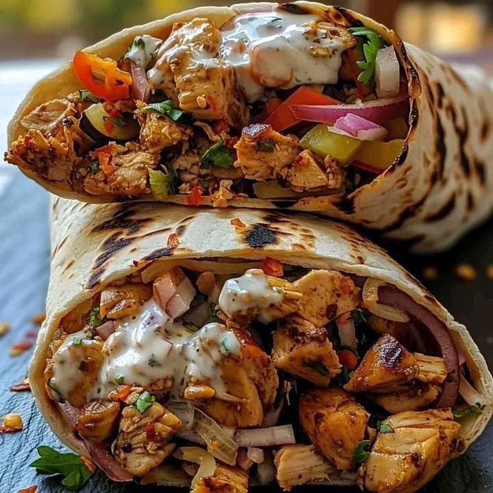

Sharwarma

Description
Ingredients
- 500g boneless chicken thighs or breasts
- 3 tablespoons yogurt
- 2 tablespoons vegetable oil
- 1 tablespoon lemon juice
- 3 cloves garlic, minced
- 1 teaspoon paprika
- 1 teaspoon cumin
- 1 teaspoon curry powder
- 1/2 teaspoon turmeric
- 1/2 teaspoon black pepper
- 1 teaspoon salt
- 1/2 cup mayonnaise
- 2 tablespoons ketchup
- 1 teaspoon garlic paste
- 1 teaspoon lemon juice
- 4 shawarma wraps or pita bread
- Sliced tomatoes
- Sliced onions
- Shredded lettuce or cabbage
- Cucumber slices
- French fries (optional)
Steps
- In a bowl, combine the yogurt, oil, lemon juice, garlic, paprika, cumin, curry powder, turmeric, black pepper, and salt.
- Add the chicken and mix well until fully coated.
- Cover and marinate for at least 1 hour. For better flavor, marinate overnight in the refrigerator.
- Heat a pan over medium heat and cook the chicken for 6–8 minutes on each side until fully cooked and slightly charred.
- Remove the chicken from the pan and slice it into thin strips.
- In a small bowl, mix the mayonnaise, ketchup, garlic paste, and lemon juice to make the sauce.
- Warm the shawarma bread or pita slightly.
- Spread some sauce on the bread.
- Add the sliced chicken, tomatoes, onions, lettuce, cucumbers, and fries if using.
- Roll the shawarma tightly and grill lightly for 1–2 minutes on each side for extra crispness.
- Slice in half and serve warm.
Home